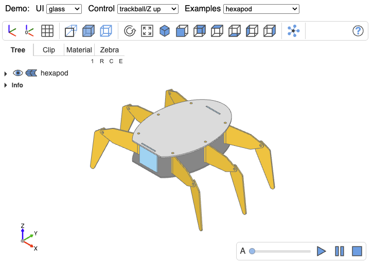

A CAD viewer component based on three.js. The CAD viewer can visualize low level threejs objects (tessellated objects)

npm i -g yarn) if not already done;git clone https://github.com/bernhard-42/three-cad-viewer.git && cd three-cad-viewer;yarn install to install dependenciesyarn run start and go to the page displayed in the logs (ie. 127.0.0.1:8080)yarn run clean; yarn run build; yarn run docs;A Shape contains the attributes
vertices (the BufferGeometry attribute position)triangles (the triangle index of the BufferGeometry)normals (the BufferGeometry attribute normal)as described e.g. in BufferGeometry or Three.js Custom BufferGeometry
plus additionally the attribute
edgesto define which edges of the mesh should be shown.
The 4 attributes (vertices, triangles, normals, edges) define an object called Shape, see Class Shape
Multiple Shapes can be arranged as an hierarchical tree. This tree is modelled as Shapes object, see Class Shapes
The ids on each level define a path to each node and leaf of tree, e.g. /level1/level2_obj1/level3_object7 and so on.
For each leaf of the tree a 2 dim tuple needs to be provided to define whether shape and edges should be shown
The value 2 is reserved for nodes and shows a mixed state, i.d. some of the children are show, some not.
For the States object, see Class States
<html>
<head>
<link rel="stylesheet" href="./dist/three-cad-viewer.css" />
<script type="module">
import { Viewer, Display, Timer } from "./dist/three-cad-viewer.esm.js";
function nc(change) {
console.log("NOTIFY:", JSON.stringify(change, null, 2));
}
const displayOptions = {
cadWidth: 850,
height: 525,
treeWidth: 240,
theme: "browser",
pinning: true,
keymap: {
shift: "shiftKey",
ctrl: "ctrlKey",
meta: "metaKey",
},
};
const renderOptions = {
ambientIntensity: 1.0,
directIntensity: 1.1,
metalness: 0.3,
roughness: 0.65,
edgeColor: 0x707070,
defaultOpacity: 0.5,
normalLen: 0,
};
const viewerOptions = {
target: [0, 0, 0],
up: "Z",
};
const shapes = {
version: 3,
parts: [
{
id: "/Group/Workplane(Solid)",
type: "shapes",
subtype: "solid",
name: "Workplane(Solid)",
shape: {
vertices: [
-0.5, -0.5, -0.5, -0.5, -0.5, 0.5, -0.5, 0.5, -0.5, -0.5, 0.5,
0.5, 0.5, -0.5, -0.5, 0.5, -0.5, 0.5, 0.5, 0.5, -0.5, 0.5, 0.5,
0.5, -0.5, -0.5, -0.5, 0.5, -0.5, -0.5, -0.5, -0.5, 0.5, 0.5,
-0.5, 0.5, -0.5, 0.5, -0.5, 0.5, 0.5, -0.5, -0.5, 0.5, 0.5, 0.5,
0.5, 0.5, -0.5, -0.5, -0.5, -0.5, 0.5, -0.5, 0.5, -0.5, -0.5,
0.5, 0.5, -0.5, -0.5, -0.5, 0.5, -0.5, 0.5, 0.5, 0.5, -0.5, 0.5,
0.5, 0.5, 0.5,
],
triangles: [
1, 2, 0, 1, 3, 2, 5, 4, 6, 5, 6, 7, 11, 8, 9, 11, 10, 8, 15, 13,
12, 15, 12, 14, 19, 16, 17, 19, 18, 16, 23, 21, 20, 23, 20, 22,
],
normals: [
-1.0, -0.0, 0.0, -1.0, -0.0, 0.0, -1.0, -0.0, 0.0, -1.0, -0.0,
0.0, 1.0, 0.0, -0.0, 1.0, 0.0, -0.0, 1.0, 0.0, -0.0, 1.0, 0.0,
-0.0, 0.0, -1.0, -0.0, 0.0, -1.0, -0.0, 0.0, -1.0, -0.0, 0.0,
-1.0, -0.0, -0.0, 1.0, 0.0, -0.0, 1.0, 0.0, -0.0, 1.0, 0.0,
-0.0, 1.0, 0.0, -0.0, -0.0, -1.0, -0.0, -0.0, -1.0, -0.0, -0.0,
-1.0, -0.0, -0.0, -1.0, 0.0, 0.0, 1.0, 0.0, 0.0, 1.0, 0.0, 0.0,
1.0, 0.0, 0.0, 1.0,
],
edges: [
-0.5, -0.5, -0.5, -0.5, -0.5, 0.5, -0.5, -0.5, 0.5, -0.5, 0.5,
0.5, -0.5, 0.5, -0.5, -0.5, 0.5, 0.5, -0.5, -0.5, -0.5, -0.5,
0.5, -0.5, 0.5, -0.5, -0.5, 0.5, -0.5, 0.5, 0.5, -0.5, 0.5, 0.5,
0.5, 0.5, 0.5, 0.5, -0.5, 0.5, 0.5, 0.5, 0.5, -0.5, -0.5, 0.5,
0.5, -0.5, -0.5, -0.5, -0.5, 0.5, -0.5, -0.5, -0.5, -0.5, 0.5,
0.5, -0.5, 0.5, -0.5, 0.5, -0.5, 0.5, 0.5, -0.5, -0.5, 0.5, 0.5,
0.5, 0.5, 0.5,
],
obj_vertices: [
-0.5, -0.5, 0.5, -0.5, -0.5, -0.5, -0.5, 0.5, 0.5, -0.5, 0.5,
-0.5, 0.5, -0.5, 0.5, 0.5, -0.5, -0.5, 0.5, 0.5, 0.5, 0.5, 0.5,
-0.5,
],
face_types: [0, 0, 0, 0, 0, 0],
edge_types: [0, 0, 0, 0, 0, 0, 0, 0, 0, 0, 0, 0],
triangles_per_face: [2, 2, 2, 2, 2, 2],
segments_per_edge: [1, 1, 1, 1, 1, 1, 1, 1, 1, 1, 1, 1],
},
state: [1, 1],
color: "#e8b024",
alpha: 1.0,
texture: null,
loc: [
[-0.0, -0.0, 0.0],
[0.0, 0.0, 0.0, 1.0],
],
renderback: false,
accuracy: null,
bb: null,
},
],
loc: [
[0.0, 0.0, 0.0],
[0.0, 0.0, 0.0, 1.0],
],
name: "Group",
id: "/Group",
normal_len: 0,
bb: {
xmin: -0.5,
xmax: 0.5,
ymin: -0.5,
ymax: 0.5,
zmin: -0.5,
zmax: 0.5,
},
};
// 1) get the container
const container = document.getElementById("cad_view");
// 2) Create the CAD display in this container
const display = new Display(container, displayOptions);
// 3) Create the CAD viewer
const viewer = new Viewer(display, viewerOptions, nc);
// or viewer.clear() if the viewer exists
// 4) Render the shapes and provide states for the navigation tree in this viewer
viewer.render(shapes, renderOptions, viewerOptions);
// 5) Dynamically add a second box offset by 2 units along X.
// addPart(parentPath, partData) builds the absolute path from the
// parent and the part's name: "/Group" + "/" + "Box2" = "/Group/Box2"
const newPart = {
version: 3,
name: "Box2",
type: "shapes",
subtype: "solid",
shape: {
vertices: [
1.5, -0.5, -0.5, 1.5, -0.5, 0.5, 1.5, 0.5, -0.5, 1.5, 0.5, 0.5, 2.5,
-0.5, -0.5, 2.5, -0.5, 0.5, 2.5, 0.5, -0.5, 2.5, 0.5, 0.5, 1.5,
-0.5, -0.5, 2.5, -0.5, -0.5, 1.5, -0.5, 0.5, 2.5, -0.5, 0.5, 1.5,
0.5, -0.5, 2.5, 0.5, -0.5, 1.5, 0.5, 0.5, 2.5, 0.5, 0.5, 1.5, -0.5,
-0.5, 2.5, -0.5, -0.5, 1.5, 0.5, -0.5, 2.5, 0.5, -0.5, 1.5, -0.5,
0.5, 2.5, -0.5, 0.5, 1.5, 0.5, 0.5, 2.5, 0.5, 0.5,
],
triangles: [
1, 2, 0, 1, 3, 2, 5, 4, 6, 5, 6, 7, 11, 8, 9, 11, 10, 8, 15, 13, 12,
15, 12, 14, 19, 16, 17, 19, 18, 16, 23, 21, 20, 23, 20, 22,
],
normals: [
-1, 0, 0, -1, 0, 0, -1, 0, 0, -1, 0, 0, 1, 0, 0, 1, 0, 0, 1, 0, 0,
1, 0, 0, 0, -1, 0, 0, -1, 0, 0, -1, 0, 0, -1, 0, 0, 1, 0, 0, 1, 0,
0, 1, 0, 0, 1, 0, 0, 0, -1, 0, 0, -1, 0, 0, -1, 0, 0, -1, 0, 0, 1,
0, 0, 1, 0, 0, 1, 0, 0, 1,
],
edges: [
1.5, -0.5, -0.5, 1.5, -0.5, 0.5, 1.5, -0.5, 0.5, 1.5, 0.5, 0.5, 1.5,
0.5, -0.5, 1.5, 0.5, 0.5, 1.5, -0.5, -0.5, 1.5, 0.5, -0.5, 2.5,
-0.5, -0.5, 2.5, -0.5, 0.5, 2.5, -0.5, 0.5, 2.5, 0.5, 0.5, 2.5, 0.5,
-0.5, 2.5, 0.5, 0.5, 2.5, -0.5, -0.5, 2.5, 0.5, -0.5, 1.5, -0.5,
-0.5, 2.5, -0.5, -0.5, 1.5, 0.5, -0.5, 2.5, 0.5, -0.5, 1.5, -0.5,
0.5, 2.5, -0.5, 0.5, 1.5, 0.5, 0.5, 2.5, 0.5, 0.5,
],
obj_vertices: [
1.5, -0.5, 0.5, 1.5, -0.5, -0.5, 1.5, 0.5, 0.5, 1.5, 0.5, -0.5, 2.5,
-0.5, 0.5, 2.5, -0.5, -0.5, 2.5, 0.5, 0.5, 2.5, 0.5, -0.5,
],
face_types: [0, 0, 0, 0, 0, 0],
edge_types: [0, 0, 0, 0, 0, 0, 0, 0, 0, 0, 0, 0],
triangles_per_face: [2, 2, 2, 2, 2, 2],
segments_per_edge: [1, 1, 1, 1, 1, 1, 1, 1, 1, 1, 1, 1],
},
state: [1, 1],
color: "#5b9bd5",
alpha: 1.0,
renderback: false,
};
viewer.addPart("/Group", newPart); // creates "/Group/Box2"
// 6) Remove the part again by absolute path
viewer.removePart("/Group/Box2");
// 7) Update an existing part's geometry (see "Dynamic Scene Updates" below)
viewer.updatePart("/Group/Box2", updatedPartData);
</script>
</head>
<body>
<div id="cad_view"></div>
</body>
</html>
After the initial viewer.render(), parts can be added, removed, or updated without re-rendering the entire scene.
addPart(parentPath, partData) creates new Three.js objects (meshes, edges, clipping stencils) from the part data and inserts them into the scene graph and navigation tree. removePart(path) disposes the Three.js objects and removes the part from the scene.
viewer.addPart("/Group", partData); // creates "/Group/PartName"
viewer.removePart("/Group/PartName");
updatePart(path, partData) updates an existing part's geometry without tearing down and recreating the Three.js objects. When the mesh topology is unchanged (same number of vertices, triangles, and edge segments), vertex positions, normals, and edge coordinates are written directly into the existing GPU buffers — this is significantly faster than a remove/add cycle. When the topology differs (e.g. a re-tessellation changed the face or edge count), updatePart automatically falls back to a batched removePart + addPart so the caller does not need to handle this case.
viewer.updatePart("/Group/PartName", updatedPartData);
Each of the three methods individually recomputes the bounding box, rebuilds clipping stencils, and (for add/remove) rebuilds the navigation tree. In a loop over N parts this becomes the dominant cost. All three methods accept an optional { skipBounds: true } parameter that defers this work. Call updateBounds() once after the loop to perform a single recomputation for the entire batch:
for (const part of partsToUpdate) {
viewer.updatePart(`/Group/${part.name}`, part, { skipBounds: true });
}
for (const part of partsToAdd) {
viewer.addPart("/Group", part, { skipBounds: true });
}
for (const path of pathsToRemove) {
viewer.removePart(path, { skipBounds: true });
}
viewer.updateBounds();
Add, remove, and update calls can be freely mixed within a single batch.
updateBounds() rebuilds clipping stencils whenever the scene's bounding box grows beyond the region that stencils were previously built for. This rebuild is the most expensive part of the bounds update. When the maximum extent of the geometry is known upfront (e.g. the full parameter range of a slider), call ensureStencilSize() once after the initial render to pre-size the stencil region. All subsequent updateBounds() calls whose geometry stays within this region will skip the stencil rebuild entirely:
viewer.render(shapes, renderOptions, viewerOptions);
viewer.ensureStencilSize({
xmin: -200, xmax: 200,
ymin: -200, ymax: 200,
zmin: 0, zmax: 300,
});
// All updates within these bounds are now stencil-rebuild-free
The keymap serves two purposes:
shift, ctrl, meta, alt) remap which physical modifier key is used for mouse interactions (e.g. shift-click to isolate, ctrl-rotate). Values are DOM event properties like "shiftKey", "ctrlKey", "metaKey", "altKey".Click on the viewer to give it focus, then press shortcut keys to trigger actions. Button tooltips show [key] suffixes when shortcuts are configured.
The default keymap:
keymap: {
// Modifier keys (remap physical keys for mouse interactions)
shift: "shiftKey", ctrl: "ctrlKey", meta: "metaKey", alt: "altKey",
// Toggle buttons
axes: "a", axes0: "A", grid: "g", gridxy: "G",
perspective: "p", transparent: "t", blackedges: "b",
explode: "x", zscale: "L",
distance: "D", properties: "P", select: "S",
// Execute buttons
reset: "R", resize: "r",
iso: "0", front: "1", rear: "2", top: "3", bottom: "4", left: "5", right: "6",
// Help
help: "h",
// Animation
play: " ", stop: "Escape",
// Tab selection
tree: "T", clip: "C", material: "M", zebra: "Z",
}
Pass a partial keymap to override individual bindings — unspecified keys keep their defaults:
const displayOptions = {
keymap: { axes: "q", reset: "!" }, // only these two change
};
To understand the data format, a look at the simple 1 unit sized box might be helpful:
Back to Github repo
Control log verbosity with the built-in logger:
import { logger } from "three-cad-viewer";
// Default level is "warn" (only warnings and errors shown)
logger.setLevel("debug"); // Enable all logging
logger.setLevel("info"); // Info, warnings, and errors
logger.setLevel("warn"); // Warnings and errors (default)
logger.setLevel("error"); // Only errors
logger.setLevel("silent"); // Disable all logging
Track GPU resource allocation to inspect current state or detect memory leaks:
import { gpuTracker } from "three-cad-viewer";
// Check resource counts at any time
console.log(gpuTracker.summary);
// { geometry: 5, material: 10, texture: 1, total: 16 }
// Log details of allocated resources
gpuTracker.details();
For detailed allocation info with stack traces:
// Enable debug mode BEFORE creating the viewer
gpuTracker.enableDebug();
const display = new Display(container, displayOptions);
const viewer = new Viewer(display, viewerOptions, nc);
viewer.render(shapes, renderOptions, viewerOptions);
// Inspect current allocations
gpuTracker.details();
// [1] geometry: BufferGeometry (shape) for /Assembly/Part1
// Created at: 1234.56ms
// Stack:
// at NestedGroup.renderShape (nestedgroup.ts:425)
// ...
// After disposal, any remaining resources are potential leaks
viewer.dispose();
gpuTracker.details();
The tracker is also available globally in the browser console as window.tcv_gpu.
Run a web server in watch and debug mode
yarn run debug
For the deployment, see Release.md
see Changes.md